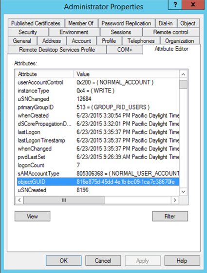
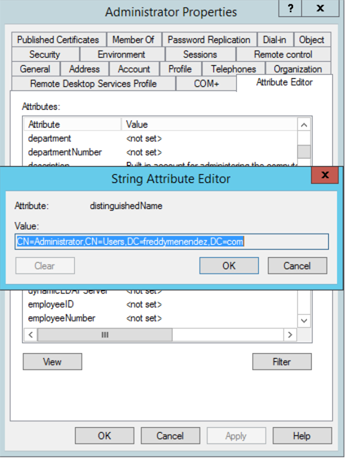
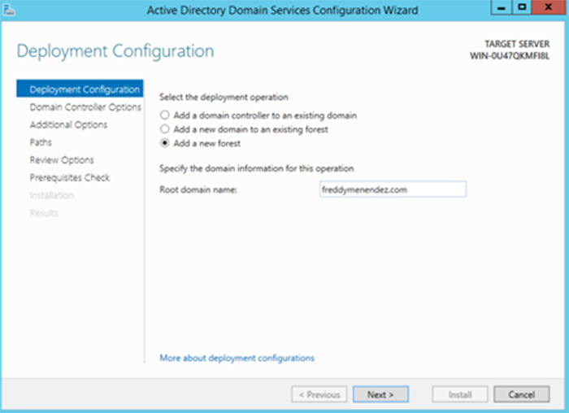
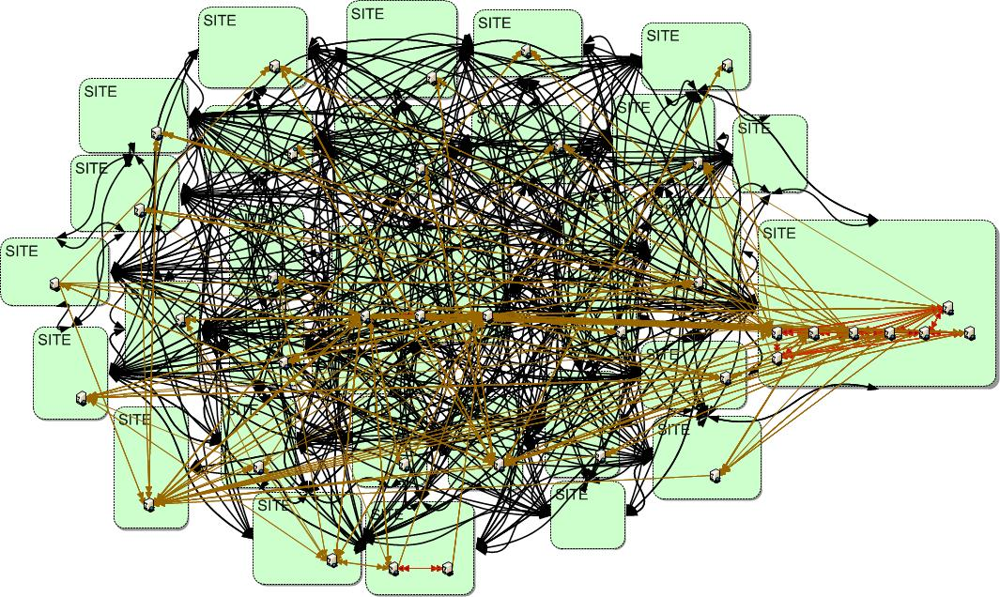
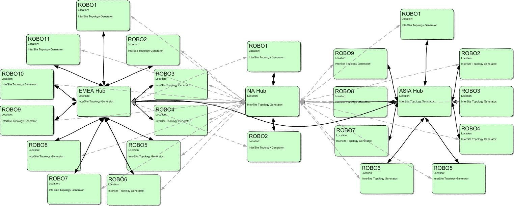
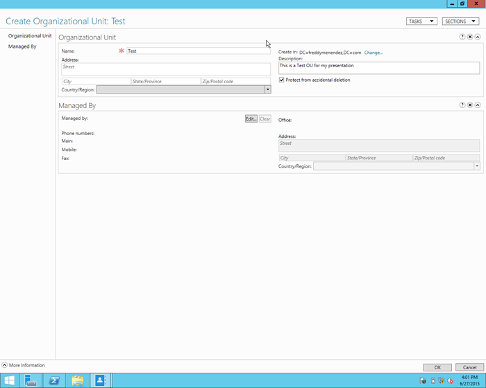
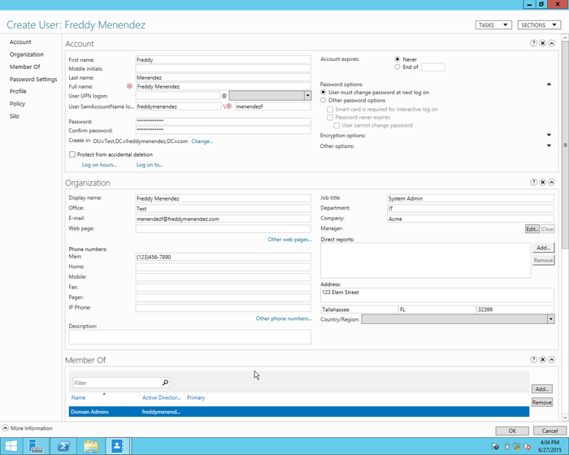
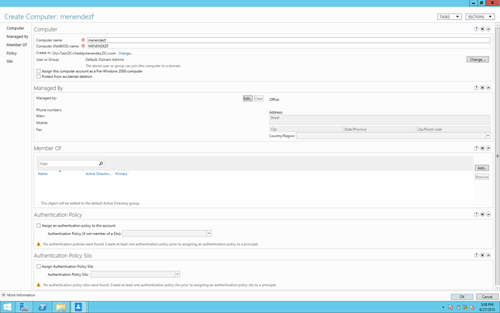

Active Directory
Created by Freddy Menendez
LIS4708 - Perspectives on Information Technology, Florida State University
What is it?
Since Windows Server 2000, Active Directory has been Microsoft's Network operating system (NOS). It enables administrators to manage enterprise-wide information efficiently from a central repository that can be globally distributed.
How does it work?
- Microsoft decided to use the Lightweight Directory Access Protocol (LDAP) as a means of accessing the data
- A database is used to store all the data that is created within the directory
- Kerebos is used for security
LDAP History
- LDAP first started in the 1993 but never really took off due to a lack of features
- First directory server that used LDAP was released in 1995 after the University of Michigan added features to it
- The final release (Version 3) of LDAP was released in 1997 and made it robust enough and extensible enough for most vendors to implement.
How is data stored?
- The data within AD may look hierarchically, but it is actually stored in a flat database
- Every entry is referred to as an object
- There are two types of objects: Containers and non containers
Database
- AD's database runs off of Extensible Storage Engine (ESE) which is based off of Jet Technology
- The file can be found at %SystemRoot%\ntds\NTDS.DIT
How Objects are Identified
- Objects in AD can either be identified/referenced by three ways
- Globally Unique Identifier(GUID) - 128 bit number that generated by the system at the time of creation
- Distinguished Name(DN) - hierarchical paths to that object
- There are also Relative Distinguished Names(RDN) - reference on object to its parent container
Example GUID

Example DN

How to create an Active Directory Domain
Microsoft Best Practices
- Know organization and infrastructure
- Use only one Forest in your structure
- A Forest is the highest level container
- Divide a domain using Organization units
- OUs can be used to assign administration rights
- Use the highest Schema version you can
- Try to have at least on physical DC
- Time is important
- Microsoft has a list of authorized time servers
Steps of configuring a Domain Controller

Steps of configuring a Domain Controller

Steps of configuring a Domain Controller

After you have one DC make more
- In order to create site resilience, you need more than one DC
- Be mindful of replication between DCs
- Users are replicated through AD replication
- Group Policy and Logon scripts are replicated through SYSVOL
When Replication Goes Wrong

When Replication Goes Right

Creating Objects in Active Directory
How to Create an Organizational Unit
Set-ADObject -Identity:"OU=Test,DC=freddymenendez,DC=com"
-ProtectedFromAccidentalDeletion:$true
-Server:"WIN-0U47QKMFI8L.freddymenendez.com"
How to Create an Organizational Unit

How to Create a User
SNew-ADUser -City:"Tallahassee" -Company:"Acme" -Department:"IT"
-DisplayName:"Freddy Menendez" -EmailAddress:"menendezf@freddymenendez.com"
-GivenName:"Freddy" -Name:"Freddy Menendez" -Office:"Test"
-OfficePhone:"(123)456-7890" -Path:"OU=Test,DC=freddymenendez,DC=com"
-PostalCode:"32399" -SamAccountName:"menendezf"
-Server:"WIN-0U47QKMFI8L.freddymenendez.com"
-State:"FL" -StreetAddress:"123 Elem Street"
-Surname:"Menendez" -Title:"System Admin" -Type:"user"
Set-ADAccountPassword -Identity:"CN=Freddy Menendez,OU=Test,DC=freddymenendez,DC=com"
-NewPassword:"System.Security.SecureString"
-Reset:$true -Server:"WIN-0U47QKMFI8L.freddymenendez.com"
Enable-ADAccount -Identity:"CN=Freddy Menendez,OU=Test,DC=freddymenendez,DC=com"
-Server:"WIN-0U47QKMFI8L.freddymenendez.com"
Add-ADPrincipalGroupMembership -Identity:"CN=Freddy Menendez,OU=Test,DC=freddymenendez,DC=com"
-MemberOf:"CN=Domain Admins,CN=Users,DC=freddymenendez,DC=com"
-Server:"WIN-0U47QKMFI8L.freddymenendez.com"
Set-ADAccountControl -AccountNotDelegated:$false
-AllowReversiblePasswordEncryption:$false
-CannotChangePassword:$false -DoesNotRequirePreAuth:$false
-Identity:"CN=Freddy Menendez,OU=Test,DC=freddymenendez,DC=com"
-PasswordNeverExpires:$false
-Server:"WIN-0U47QKMFI8L.freddymenendez.com" -UseDESKeyOnly:$false
Set-ADUser -ChangePasswordAtLogon:$true -Identity:"CN=Freddy Menendez,OU=Test,DC=freddymenendez,DC=com" -Server:"WIN-0U47QKMFI8L.freddymenendez.com" -SmartcardLogonRequired:$false
How to Create a User

How to Create a Computer
New-ADComputer -Enabled:$true -Name:"menendezf"
-Path:"OU=Test,DC=freddymenendez,DC=com"
-SamAccountName:"MENENDEZF" -Server:"WIN-0U47QKMFI8L.freddymenendez.com"
How to Create a Computer

With Objects you can now
- Create Group Policy Objects
- Share Network Resources
- Implement Fine Grain Password Policies
- Remotely Administer computers
- Implement a Role Based Access Control (RBAC) security
- Create Logon Scripts
- Authinticate to third party software using LDAP or Windows Azure